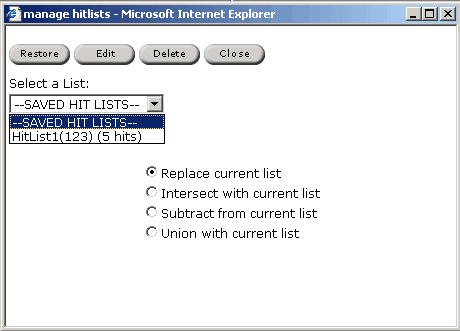

Select the appropriate hit list from the listbox.
Select the appropriate radio button (to indicate how
you would like the list restored).
The hit list is displayed in list view.
The Manage Hit Lists dialog box allows users to restore, edit, and delete hit lists, which were made by the current user. Saved hit lists are user specific.
To start managing your hit lists,
select Manage from the Hit
Lists Menu.
The Manage Hit Lists dialog appears.

When restoring a hitlist from the Manage Hit Lists dialog box, saved hitlists can be merged in specified ways to generate a new hit list. The options when restoring a hit list are:
| Restore Option | Result |
| Replace Current List | The saved list is displayed in list view as it was saved. |
| Intersect with Current List | A hit list is displayed which contains only the hits found in both the saved list and the current list. |
| Subtract from Current List | A hit list is displayed which contains all of the hits in the current list, not including any hits also found in the saved list. |
| Union with Current List | A hit list is displayed which contains all of the hits in the saved list as well as those in the current list. |
To restore a hit list:
For more information about restoring hit lists, please see Restoring Hit Lists.
Edit Hit List allows the user to enter new identifier information for the hit list, such as a new name and description.
To edit a hit list:
Only saved hit lists can be deleted. Hit lists in the history remain in the hit list list until the history is cleared. To change when the history is cleared, please see your system administrator.
To delete a hit list:
|
| Download ChemOffice Enterprise User's Guide (PDF) |
| Download ChemOffice Enterprise User's Guide (CHM) |
| CambridgeSoft
Corporation http://www.cambridgesoft.com Voice: (617) 588-9100 Fax: (617) 588-9360 support@cambridgesoft.com |